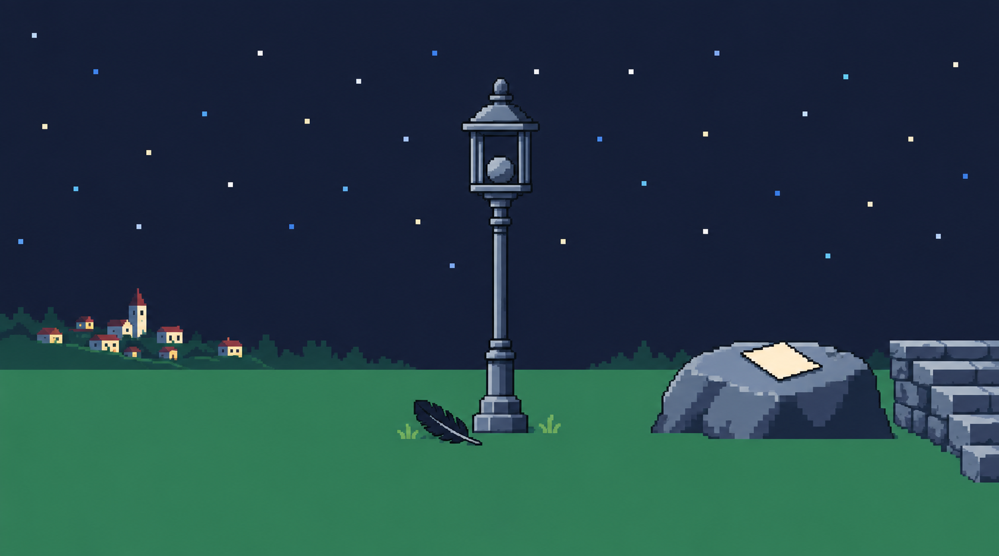
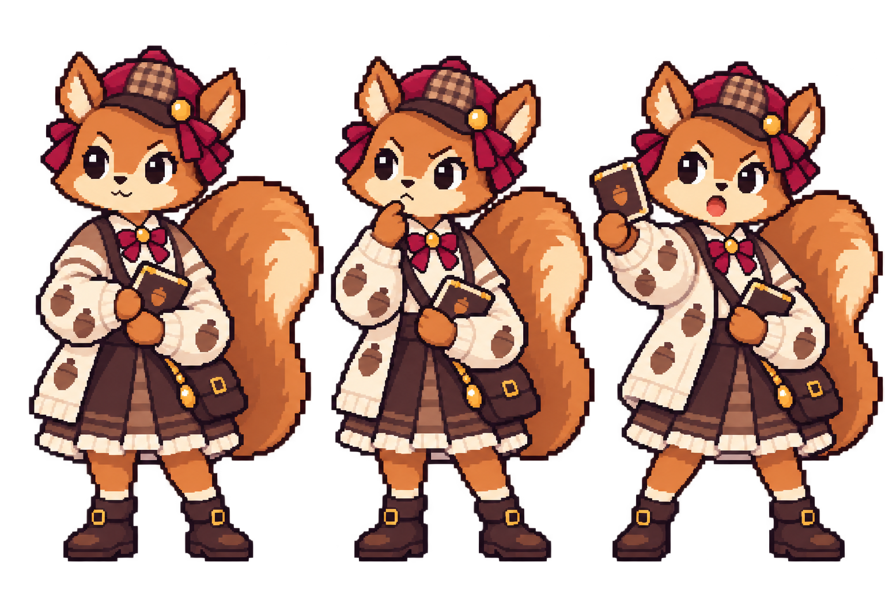
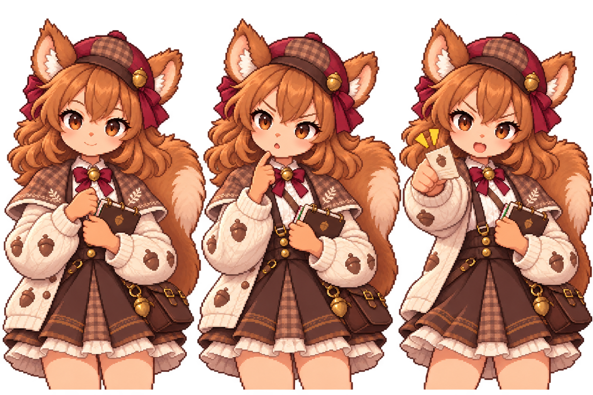

다람 탐정 · 도트 방향 시안
별빛 언덕과 다람의 세 포즈. 게임 원본과 기존 캐릭터는 그대로 두고, 새 그림을 따로 보관했습니다.
아직 최종 도트 규격을 충족하지 않은 시안입니다. 생성 파일에는 26색을 넘는 색과 부드러운 색 변화가 남아 있으며, 배경도 요청한 360×200의 정확한 4배 크기가 아닙니다.




기존 다람과 비교

별빛 언덕과 다람의 세 포즈. 게임 원본과 기존 캐릭터는 그대로 두고, 새 그림을 따로 보관했습니다.
아직 최종 도트 규격을 충족하지 않은 시안입니다. 생성 파일에는 26색을 넘는 색과 부드러운 색 변화가 남아 있으며, 배경도 요청한 360×200의 정확한 4배 크기가 아닙니다.


